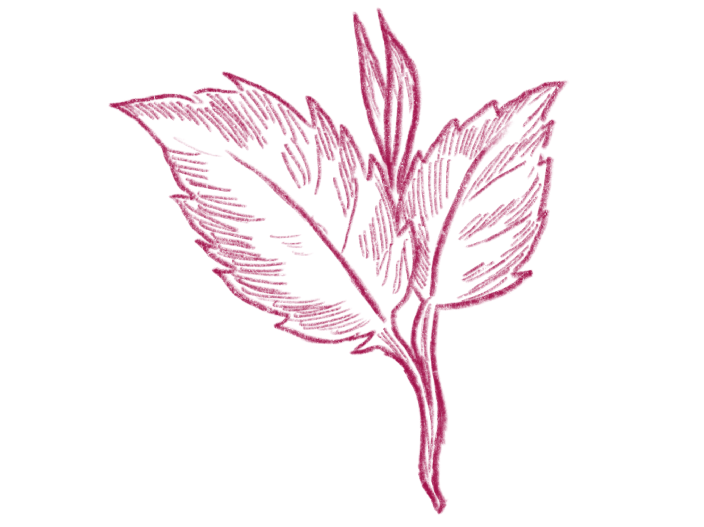

Refreshing drinks always hit the spot. If you agree, this cucumber and lime mocktail is also perfect for you!
MINTY ZEST:
RECIPE
INGREDIENTS:
DIRECTIONS:
SERVE:
Cut your fruit of choice (or the ones preferred above) and garnish your drink with them. Top it off with some coconut shavings. Drink “sweet beach” while you breathe in the ocean air and feel the sand beneath your feet.
